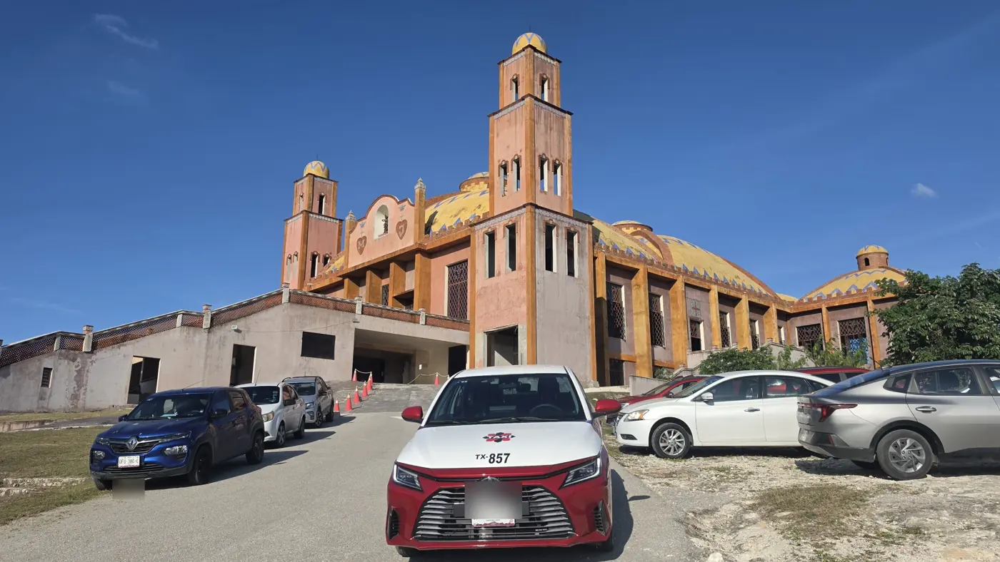
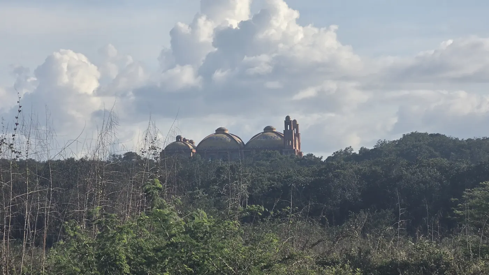
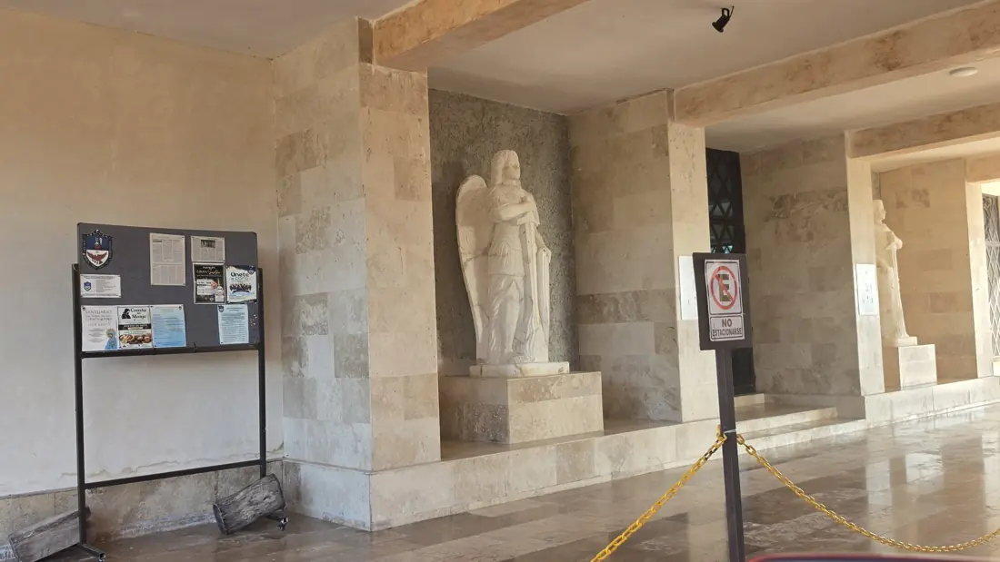

Inicio › Santuario
Uayamón · Campeche
Santuario del Inmaculado Corazón de María, te llevamos y te esperamos
El santuario está sobre un cerro en medio de la selva, cerca de Uayamón. No hay transporte público y casi no hay señal de celular: deja tu regreso apartado con nosotros.
Precios (sedán, hasta 4 personas)
| 🏛️ Desde el Centro, solo ida | $450 |
| 🚆 Desde la estación del Tren Maya, solo ida Incluye espera: si tu tren se retrasa hasta 20 minutos, no cobramos tiempo de espera. | $600 |
| ⏱️ Espera: primeras 2 horas | $300 por hora |
| ⏱️ Espera después de 2 horas | $100 cada 15 min |
| ⭐ Paquete desde el Centro: ida, espera de hasta 2 h 45 min y regreso | $1,100 |
Tiempo extra del paquete: $100 por cada 15 minutos adicionales. Damos factura.
💳 Tarjeta o transferencia: se paga al abordar
Reservar por WhatsApp
En el santuario casi no hay señal, por eso el pago con tarjeta o transferencia se hace al subir al taxi, antes de salir. En efectivo puedes pagar al final.



📶 Poca señal de celular
En el santuario casi no hay señal; a veces entra un poco la de AT&T. Acuerda la hora de regreso con tu taxista antes de entrar.
⛪ Horarios del Santuario
| Viernes | |
| Atenciones y confesiones | 3:00 – 8:00 pm |
| Liturgia de liberación | 5:00 pm |
| Sábado | |
| Adoración eucarística | 3:00 – 5:45 pm |
| Confesiones | 3:00 – 8:00 pm |
| Santa Misa | 6:00 pm |
| Domingo | |
| Adoración eucarística | 9:00 – 10:30 am |
| Confesiones | 9:00 am – 12:00 pm |
| Santa Misa | 11:00 am |
| 1er jueves de mes | |
| Adoración eucarística | 6:00 – 10:00 pm |
Según el letrero de la entrada al 20 de noviembre de 2026. Pueden cambiar.
Lo que incluye tu viaje
⏱️10 minutos antesTu taxi te espera, no tú a él.
❄️Aire acondicionadoSedán limpio y cómodo.
🛡️Seguro de viajeroEn todos los viajes.
💳Tarjeta o efectivoDébito o crédito.
🧾Factura electrónicaPídela al reservar o escribe a facturacion@taxicelcampeche.com
🕐24 horasTambién vuelos temprano y trenes de noche.
Preguntas frecuentes
¿Cuánto cuesta un taxi al Santuario de Uayamón?
Desde el Centro de Campeche $450 solo ida; desde la estación del Tren Maya $600. Paquete con ida, espera de hasta 2 h 45 min y regreso: $1,100.
¿Hay señal de celular en el Santuario?
Casi no. A veces entra un poco la de AT&T. Por eso conviene dejar el regreso apartado.
¿A qué hora es la misa?
Sábado 6:00 pm y domingo 11:00 am. Revisa la tabla de horarios de esta página.
¿Puedo pagar con tarjeta y pedir factura?
Sí, con tarjeta o transferencia, pero se paga al abordar porque en el santuario casi no hay señal. También damos factura.
¿Por qué desde el Tren Maya cuesta más?
Porque incluye la espera: si tu tren se retrasa hasta 20 minutos, no cobramos tiempo de espera.